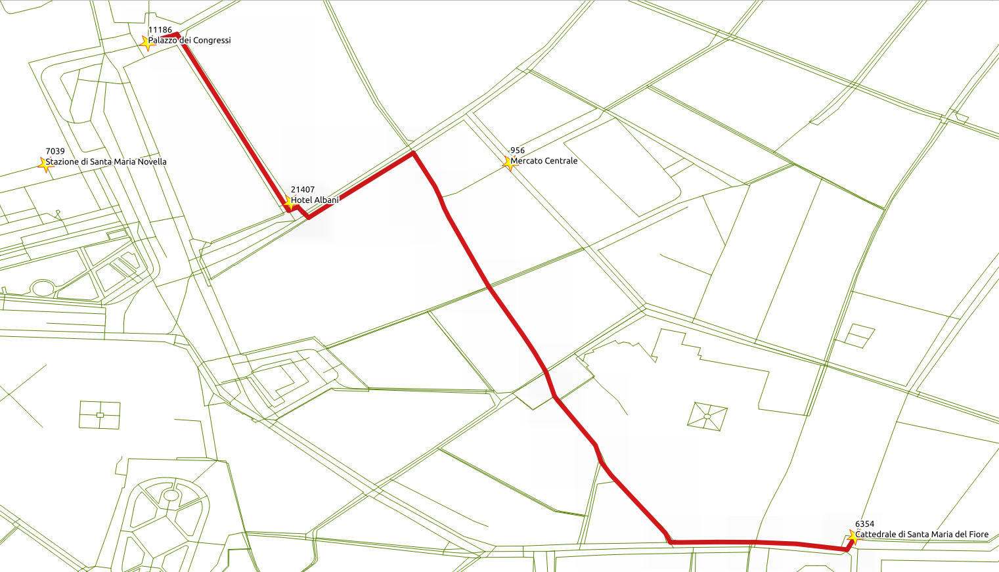

1. Using Qgis¶
{kind=link}
Other kind of functions are pl/pgsql. As applications requirements become more complex, using previously defined functions becomes necessary.
1.1. Set Up QGIS¶
Graphs have a set of edges and set of vertices associated to it.
osm2pgrouting provides the ways_vertices_pgr table which is associated with
the ways table.
When a subset of edges is used like in vehicle_net or in small_net,
the set of vertices associated to each one must be used in order to, for example,
locate the nearest vertex to a lat/lon location.
Launch QGIS from and select from the menu bar.

Note
The location of QGIS may vary.
The workshop instructions are based on QGIS 2.14 Essen

Close the broswer pannel

Connect to a posgGIS enabeled potsgreSQL database clicking on

Create a new connection clicking on

Fill the information and test the connection

Name city_routing
Host localhost
Port 5432
Database city_routing
User name user
Password user
Allow qgis to remember login and password

1.2. Add a postGIS Layer¶
Click and a list of tables and views from the database will show.
It is necessaary to select the column that has a distinct unique value:
seqon the routing viewsgidon the data views

1.3. Format a Routing Layer¶
Choose a routing view,


1.4. Copy/Paste Format¶
Choose a formmated layer and

Choose another layer and

1.5. Save the project¶

Navigate to: and save
pgrouting-Bucharest-Example